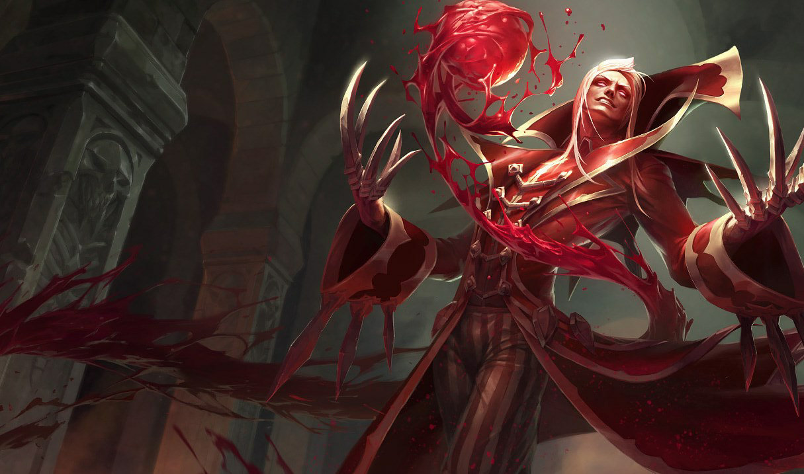
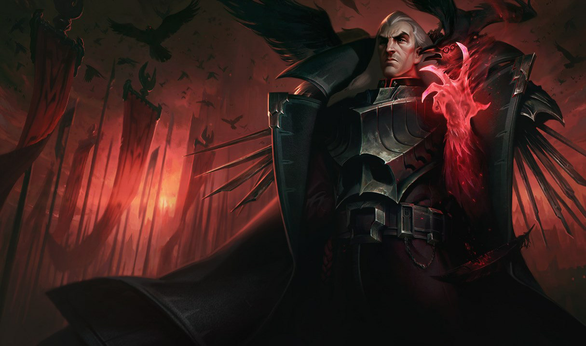
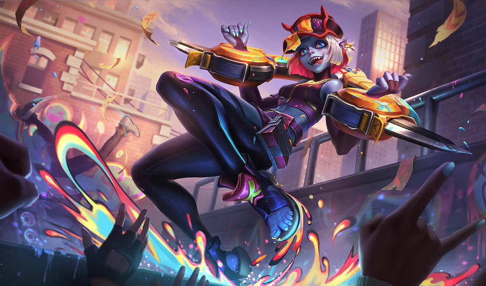
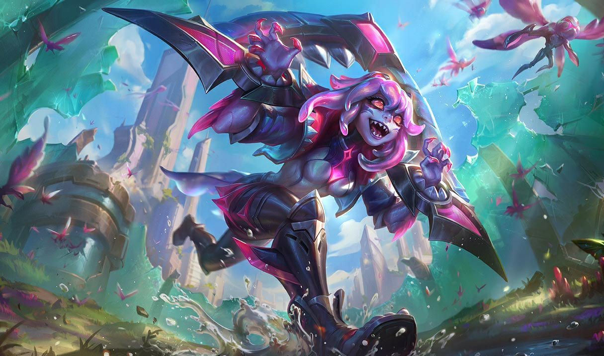

Cumplelolero · ayer, 13 sep
BRIAR3 AÑOS
El Hambre Contenida
Jungla · Noxus · ya tiene edad para el kínder
LA 165
de la historia
13.18
el parche
SIN REWORK
es muy nueva
No nació. La fabricaron.
Un gólem de sangre
hecho para matar
hecho para matar
Tiene carne y tiene sangre, pero no necesita comer ni tomar agua para vivir.
La Rosa Negra, en Noxus
Los que la
mandaron hacer

VLADIMIR
El hemomante mayor de Noxus

SWAIN
A quien la mandaron a matar
Y lo primero que hizo al salir del cepo fue devorarse a su propio cuidador.
Todo lo que existe de ella

Original

Demonios Callejeros

Primordiana
Academia de Combate
«Yo no pierdo el control,
me libero del control»
me libero del control»
El one trick #1 del mundo
ERIK0
#1312
Europa Nórdica y Este · nivel de invocador 1 755 · maestría 704
7 709 980
puntos de maestría · en solo 3 años
Diamante 2
rango actual · 4 LP
Master
su pico · 367 LP
top 2,77%
de la ladder
92 %
de todo lo que juega
3 933 de 4 262
partidas de temporada
Y en los últimos siete días se echó 81 partidas de Briar.
Pero acuérdense que tiene 3 años
El que acumula
más rápido de la serie
BRIAR
Erik0 · 3 años
KINDRED
pkoopk · 11 años
RIVEN
Secillia · 15 años
DR. MUNDO
EVANPORADA · 17 años
MALPHITE
BCBG · 17 años
Puntos de maestría por año del one trick #1
El doble de rápido que el one trick de Riven.
Las skins
4 skins, y 3 a la venta
 Demonios Callejeros
1350 RP · 2023
Demonios Callejeros
1350 RP · 2023
 Primordiana
1350 RP · 2024
Primordiana
1350 RP · 2024
Academia de Combate
1350 RP · 2026
1,9 días
de salario mínimo
~31 USD · 4 050 RP
La más barata de toda la serie. Vestir a Lux costaba diez días.
BRIAR
1,9
Dr. Mundo
3,1
Kindred
4,5
Riven
7,4
Miss Fortune
8,9
Tres años del Hambre Contenida
Feliz cumpleaños,
Briar
GIGI EASY
Tírenme un follow o les voy a meter la cuarta. Chao.